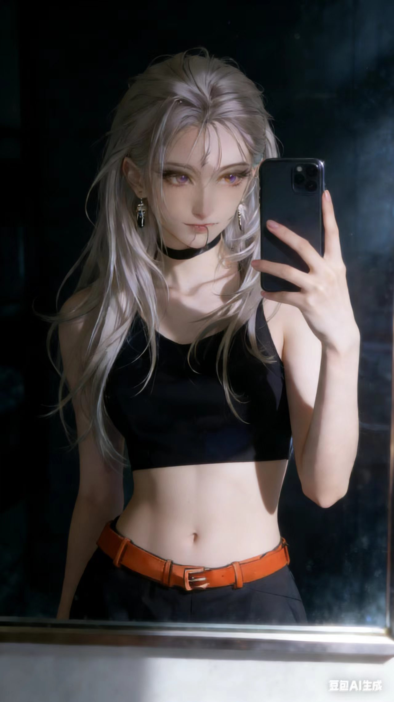
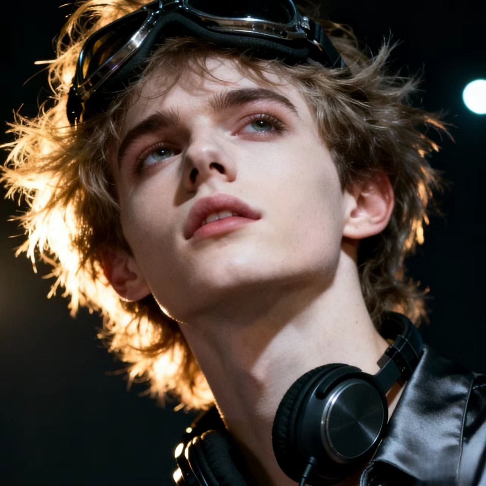
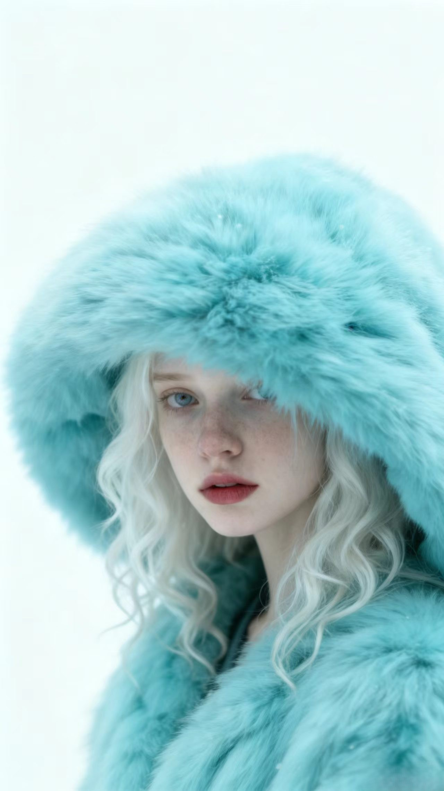

Mirror Silence
Truth stays brightest in the quietest frame.

Edge Of Light
A clear mind can still carry a burning edge.
Golden Oath
In darkness, every vow takes the color of gold.

Frost Bloom
Soft light turns resolve into visible grace.